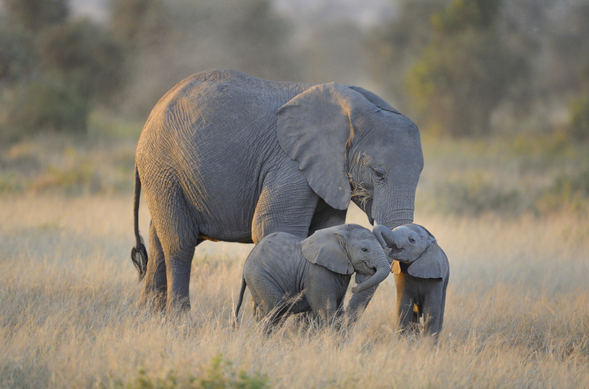
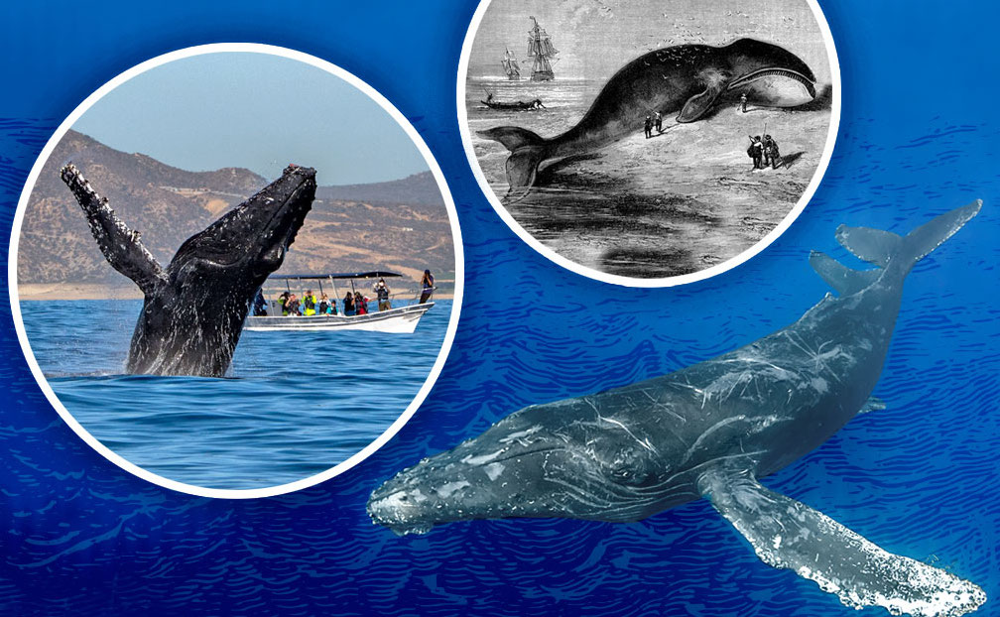
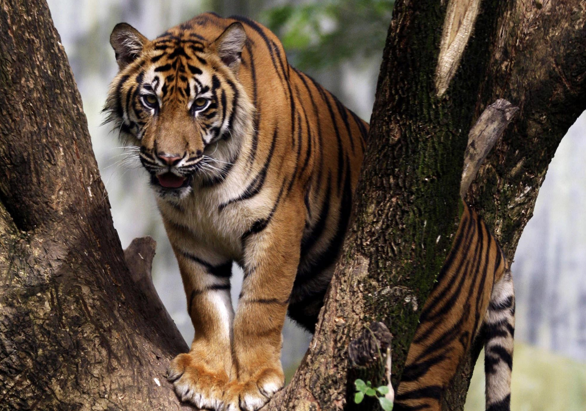
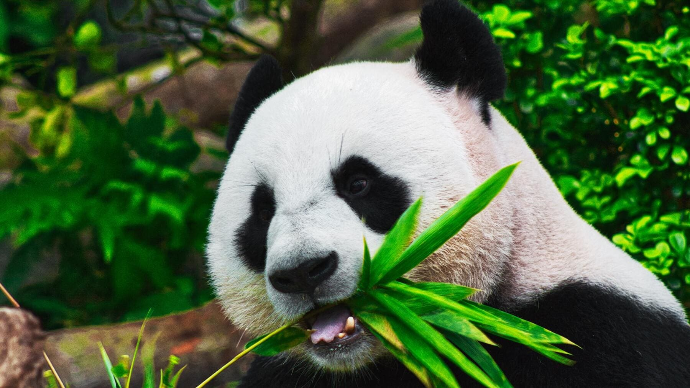
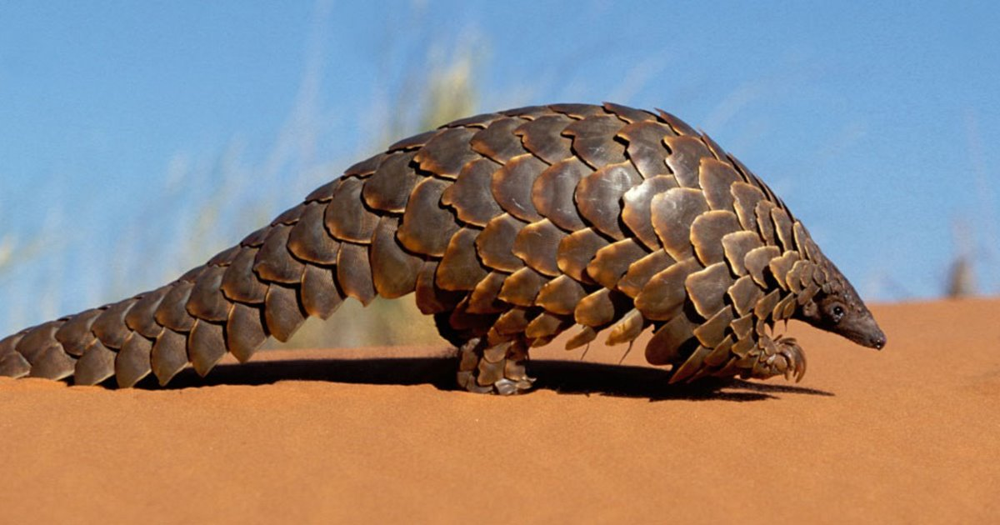
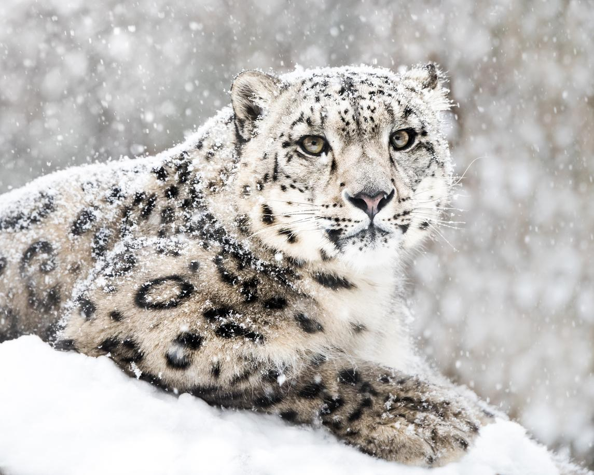

<!doctype html>
<html>
<head>
<body bgcolor=#adff2f></body>
				

<center><title>animales en peligro de extincion</title></center>

<link rel="stylesheet" type="text/css" href="paginawebyorleni.css">

</head>
</html>
 
<center><h1>El oso polar</h1></center>

<center><p>los osos polares estan clasificados como mamiferos marinos porque pasan la mayor parte de su vida en el hielo marino del oceano artico.

cuentan con una grusa capa de grasa corporal
y un cubrimiento a prueba de agua fria. Son
talentosos nadadores pueden mantener un ritmo de
6 millas por hora(9.6kph) remando com sus patas
delanteras mientras mantienen sus patas traseras planas como un timon.

los osos polares pasan mas de 50% de su tiempo buscando comida.Un oso polar puede atrapar solo una o dos de diez focas de caza dependiendo de la epoca del año y de otros factores.Ya que nesesitan grandes cantidades de grasa para sobrevivir principalmente de focas anilladas y  barbudas.</p></center>

<center></center>

<center><p>El oso polar polar esta en peligro de extincion,ya hace tiempo que los expertos vienen alertando de la problematica ala que se enfrenta esta especie pero no fue asta el 2008 cuando estados unidos decidio incluir al oso polar blanco en su lista de <b>animales en peligro de extincion</b></center>

<center><p>segun fuentes del pais norteamericano,el cambio climatico esta destruyendo su habitat en el Oceano Artico y con ello reduciendo el numero de especies en nuestro planeta a pasos agigantados En el siguiente artículo de EcologíaVerde te hablaremos sobre por qué el oso polar esté en peligro de extinción, así como de algunas acciones para poder ayudarlos y evitar su desaparición.</p></center>

<center><h2>El Elefante</h2></center>

<center><p>Los elefantes destacan principalmente por su gran tamaño e imponentes colmillos siendo el elefante africano el animal terrestre más grande del mundo.A pesar de ello con el paso de los años las poblaciones de elefantes se han reducido considerablemente y en la actualidad se cuentan entre miles en lugar de los millones de ejemplares que existían en el pasado</p>

<p>La experta asegura que por primera vez en la historia del continente africano los elefantes han entrado a la categoría de especie en <b>peligro crítico de extinción</b> Éste es el paso final antes de que desaparezcan por completo de su hábitat natural la sabana africana y por lo tanto de la faz de la Tierra</p></center>

<center></center>

<center><h1>La ballena azul</h1></center>

<center><p>Para comenzar antes de explicar por qué las ballenas azules están en peligro de extinción o en estado de endangered te explicamos un poco sobre las características principales de la ballena azul o rorcual azul para que de este modo puedas conocerla mucho mejor.</p></center>

<center></center>

<center><p><b>¿Porque la ballena azul esta en peligro de extincion?</p></b></center>

<center><h2>la caza para la venta</h2></center>

<center><p>para la comercialización de los productos que se obtienen de las ballenas como la carne y la grasa o aceite es una de las razones de por qué la ballena azul está en peligro de extinción. Esta práctica que a la mayoría de la población mundial ya nos parece antigua e innecesaria sigue llevándose a cabo incluso después de aprobarse leyes como la de 1986 en la que se aprobó la prohibición de la caza y comercialización de ballenas Algunos de los países que la siguen practicando por tradición y por comercio son Japón Islandia y Noruega.

<center><h1>El tigre de sumatra</h1></center>

<center><h4>¿Características del Tigre de Sumatra?</h4</center>

<center><p>Es el tigre mas pequeño y un rasgo característico del tigre de Sumatra es que tiene mas estrechas las rayas a comparación de los otros tigres.</p></center>

<center><p>Los machos llegan a medir hasta 2,30 metros y pesan alrededor de 120 kilos, mientras que las hembras miden unos 10 o 15 centímetros menos; y llegan a pesar al rededor de 90 o 95 kilos</p></center>

<center><p>Los tigres de Sumatra son solitarios excepto durante la temporada de apareamiento Una hembra puede tener hasta seis gatitos a la vez Las crías empiezan a cazar cuando tienen un año de edad pero se quedan con la madre hasta que cumplen dos años
Acostumbran a cazar de noche y para ello organizan una emboscada para atrapar a su presa valiéndose de sus bigotes que percibe las vibraciones que generan las presas cuando se mueven por el bosque Así los tigres la persiguen muy lenta y silenciosamente hasta que llega el momento perfecto para saltarles encima Son excelentes saltando Incluso cuando están sentados, pueden abalanzarse hasta 10 metros</p></center>      



<center><h1>El Oso panda</h1></center>

<center><p>El oso panda es uno de los animales más conocidos y queridos de todo el mundo por su aspecto adorable. Vive en los bosques de bambú de las montañas del centro de China y es muy fácil de identificar por su pelaje blanco y negro y su cuerpo voluminoso. Por desgracia, el oso panda es un animal en peligro de extinción en la actualidad. Se estima que apenas quedan 2.000 ejemplares. Pero, ¿cuáles son las razones que han llevado a esta situación? Son varias, y las explicamos a continuación</p></center>



<center><p>Este animal, que es conocido por ser pacífico, se alimenta de bambú, planta de la que puede llegar a comer hasta 38 kilos diarios. Si el animal se encuentra en cautividad, también se alimenta de caña de azúcar, zanahoria, manzana y batata, entre otros.
El peso que pueden alcanzar estos osos puede llegar hasta los 130 kilos, lo que contrasta con su pequeño tamaño al nacer que es de tan solo unos 150 gramos.
La época de reproducción de los osos panda es primavera. Tras el embarazo, que dura unos 135 días, la hembra del oso panda da a luz a una o dos crías, que serán amamantadas hasta el año de edad</p></center>

<center><h1>El Gorila de montaña</h1></center>

<center><p>Las dos únicas poblaciones de gorila de montaña existentes se localizan en las montañas Virunga (Uganda,Ruanda y República del Congo) y en la selva o bosque impenetrable de Bwindi (Uganda). Las poblaciones han registrado un ligero incremento en los últimos años,pero en total se calcula que sobreviven en ambos enclaves unos 1.000 ejemplares</p></center>

<center><p>El estudio que ahora se publica ha analizado observaciones recogidas durante 10 años en dos poblaciones de gorilas de montaña existentes, y concluye que en ambas localizaciones los gorilas bebían agua con mucha más frecuencia a temperaturas promedio más altas que en las más frías</p></center>


<center><p>No es casualidad que ambas especies de gorila se encuentren en la Lista roja de especies amenazadas que elabora la Unión Internacional para la Conservación de la Naturaleza (IUCN por sus siglas en inglés). Por desgracia para estos grandes simios, las dos especies se encuentran catalogadas en peligro crítico de extinción con unas comunidades cuyas poblaciones van en regresión año tras año. La caza furtiva, la fragmentación de los ecosistemas, la destrucción de los hábitats y la inseguridad reinante en los países africanos son las principales causas del declive de las poblaciones de gorilas hasta un punto insostenible</p></center>

<center><h1>El Pangolin</h1></center>

<center><p>Antes de que termines de leer este artículo, un pangolín será capturado en la naturaleza y sus escamas probablemente anunciadas para su venta en línea.
Puede que no lo sepas, pero el comercio de estos escurridizos mamíferos es impresionante. Se calcula que alrededor de 1 millón de pangolines fueron traficados ilegalmente en los últimos diez años, aunque esta cifra podría ser conservadora dado el volumen de las recientes incautaciones de escamas de pangolín. Según el African Pangolin Working Group, 150,000 pangolines fueron traficados sólo en África en 2019</p></center>



<p>Los pangolines son víctimas del comercio ilegal a gran escala para alimentar la demanda de su carne y de las escamas que los protegen. En la última década, se estima que más de un millón de pangolines han sido cazados en la naturaleza para satisfacer la demanda asiática, sobre todo de China y Vietnam.Como las cuatro especies de pangolín de Asia están en declive –se considera que al menos el 80% de los pangolines asiáticos han sido víctimas de la caza furtiva-,  los traficantes están apuntando cada vez más a las cuatro especies de África. En la actualidad, las ocho especies están protegidas y dos de ellas clasificadas como “en situación crítica”.En 2016, el Convenio CITES, que implica a más de 180 países, alcanzó un acuerdo para prohibir totalmente el comercio de pangolines, un gran paso para proteger a la especie de la extinción. Sin embargo, el tráfico ilegal de la especie continúa.</p>

<center><h1>El leopardo de las nieves</h1><center>
				
<center><p>El futuro del leopardo de las nieves está en peligro a causa del cambio climatico debido ala 
fragilidad de su hábitat de alta montaña según alerta la organización ecologista WWF en un informe publicado este viernes. Además casi un 30% de las especies del planeta podrían desaparecer por el calentamiento global si la cumbre climática de París del próximo diciembe no concluye con un acuerdo ambicioso y justo</p></center>



<center><p>De hecho, la ONG subraya que el aumento de temperatura puede hacer subir el límite de bosque y provocar también que los cultivos y los pastos ganaderos lleguen a mayor altitud, restringiendo aún más la superficie de hábitats que le quedan al leopardo de las nieves</p></center>

<center><p>Se calcula que apenas 4.000 leopardos de nieves sobreviven en las altas montañas de Asia central y esta cifra sigue cayendo. La creciente pérdida y degradación de su hábitat, la caza furtiva y los conflictos con las comunidades locales han contribuido a que su población haya sufrido un declive del 20% en los últimos 16 años y han dejado a la especie al borde de la extinción en muchos lugares. "Si no se le pone freno, el cambio climático agravaría estas amenazas y podría empujar a la especie al abismo", ha señalado WWF
La nueva estrategia de la organización ecologista se concentrará en los lugares en los que la organización puede contribuir más a los esfuerzos globales para conservar la especie y proteger los medios de vida de la gente incluyendo mitigar la amenaza del cambio climático, reducir conflictos con las comunidades locales y hacer frente a la caza furtiva y al tráfico de leopardos</p></center>

<h1>


